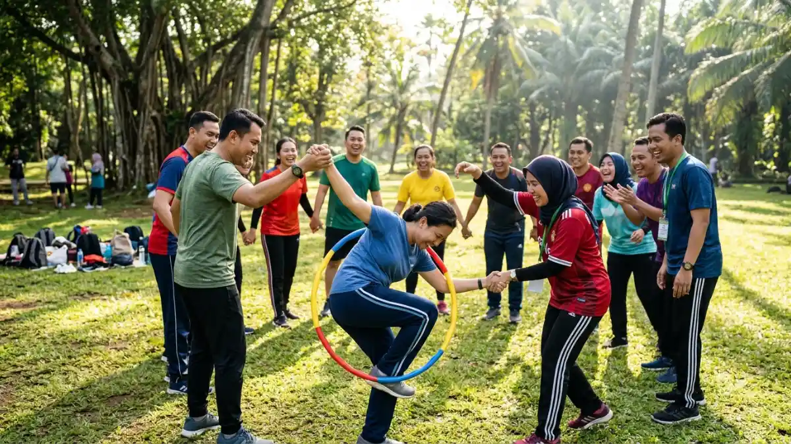

Aktivitas kelompok outdoor yang mendorong interaksi aktif meliputi permainan berpasangan, tantangan tim kecil, dan kegiatan yang mengharuskan peserta saling berbicara langsung untuk menyelesaikan tugas bersama.
DAFTAR ISI
1. Apa Saja Aktivitas Kelompok Outdoor yang Mendorong Interaksi Aktif?
Aktivitas yang mendorong interaksi aktif adalah kegiatan yang mengharuskan peserta berkomunikasi langsung, saling bertukar informasi, atau bekerja sama dalam tugas kecil secara bergantian.
Beberapa contoh aktivitas tersebut antara lain:
Two Truths and a Lie di Luar Ruangan
Setiap peserta menyampaikan tiga pernyataan tentang dirinya, dua benar dan satu bohong, sementara anggota lain menebak mana yang salah. Kegiatan ini mendorong percakapan personal yang ringan namun efektif untuk saling mengenal.
Wawancara Berpasangan
Peserta dibagi berpasangan untuk saling mewawancarai selama beberapa menit, lalu memperkenalkan pasangannya ke kelompok besar. Format ini memaksa setiap peserta berbicara langsung dengan orang lain, bukan hanya mendengarkan.
Tantangan Membentuk Bentuk Bersama
Kelompok diminta membentuk formasi tertentu menggunakan tubuh atau tali tanpa berbicara, lalu dilanjutkan dengan versi yang membolehkan komunikasi verbal. Perbandingan dua versi ini biasanya memperlihatkan pentingnya komunikasi terbuka.
Permainan Tebak Kata Berkelompok
Peserta bergiliran memberikan petunjuk kepada kelompoknya untuk menebak kata tertentu. Aktivitas ini secara alami mendorong interaksi verbal yang cepat dan spontan.
Diskusi Berjalan atau Walking Discussion
Peserta berjalan berpasangan sambil mendiskusikan topik ringan yang telah ditentukan. Suasana berjalan di alam terbuka membuat percakapan terasa lebih santai dibanding duduk formal.

Keseruan ice breaking di lapangan outdoor. (Ilustrasi)2. Mengapa Interaksi Peserta Lebih Mudah Terbentuk di Alam Terbuka?
Interaksi peserta lebih mudah terbentuk di alam terbuka karena suasana yang tidak formal membuat peserta merasa lebih rileks dan tidak terbebani oleh struktur ruang kerja atau kelas.
Ruang terbuka memberi kebebasan gerak yang lebih besar sehingga peserta tidak merasa terkurung dalam satu posisi duduk seperti di ruang rapat.
Kondisi ini secara psikologis membantu menurunkan rasa canggung, terutama pada peserta yang baru saling mengenal.
Selain itu, elemen alam seperti udara segar, suara alam, dan pemandangan terbuka dapat menjadi topik pembuka percakapan yang natural.
Peserta cenderung lebih mudah memulai obrolan ringan tentang lingkungan sekitar sebelum masuk ke topik yang lebih personal atau terkait pekerjaan.
Fasilitator kegiatan outdoor untuk gathering karyawan umumnya juga mencatat bahwa kombinasi aktivitas fisik ringan dan tantangan tim, seperti kompetisi pos ala amazing race, secara alami mendorong komunikasi dan strategi bersama di antara peserta.
3. Bagaimana Cara Memastikan Semua Peserta Aktif Terlibat?
Cara memastikan semua peserta aktif terlibat adalah dengan membagi kelompok dalam ukuran kecil, memberi peran yang jelas kepada setiap anggota, dan menghindari dominasi oleh sebagian peserta saja.
- Batasi ukuran kelompok. Kelompok yang terlalu besar membuat sebagian peserta cenderung diam dan hanya mengikuti arus. Kelompok kecil berisi empat hingga enam orang biasanya lebih efektif mendorong partisipasi merata.
- Berikan peran spesifik. Menetapkan peran seperti pencatat waktu, juru bicara, atau koordinator strategi membantu setiap anggota merasa memiliki tanggung jawab dalam kegiatan.
- Gunakan format bergiliran. Aktivitas yang mengharuskan setiap peserta berbicara secara bergiliran, seperti wawancara berpasangan, mencegah dominasi oleh peserta yang lebih vokal.
- Amati dan intervensi bila perlu. Fasilitator sebaiknya mengamati dinamika kelompok dan turun tangan secara halus bila melihat ada peserta yang pasif sepanjang kegiatan.
- Berikan apresiasi kecil. Pujian sederhana atas kontribusi peserta, sekecil apa pun, dapat mendorong peserta lain untuk lebih aktif berpartisipasi.
4. Kesalahan yang Membuat Peserta Kurang Aktif Berinteraksi
Kesalahan yang sering membuat peserta pasif meliputi kelompok yang terlalu besar, instruksi yang tidak jelas, dan minimnya variasi aktivitas sepanjang acara.
Kelompok besar tanpa pembagian peran yang jelas cenderung membuat sebagian peserta hanya menjadi penonton.
Instruksi yang membingungkan juga membuat peserta ragu untuk berpartisipasi karena takut salah memahami aturan permainan.
Selain itu, aktivitas yang monoton sepanjang acara dapat menurunkan antusiasme peserta, terutama jika tidak ada variasi antara aktivitas fisik dan aktivitas percakapan ringan.
Untuk ide aktivitas dengan format lebih sederhana yang tetap membangun kekompakan tanpa aturan rumit, baca pembahasan aktivitas kelompok yang lebih lengkap pada artikel Aktivitas Kelompok: 10 Ide Kegiatan yang Bisa Dilakukan di Alam Terbuka.
Kesimpulan
Aktivitas kelompok outdoor yang dirancang dengan format berpasangan, kelompok kecil, dan peran yang jelas terbukti lebih efektif mendorong interaksi aktif dibandingkan aktivitas dengan kelompok besar tanpa struktur.
Suasana alam terbuka membantu menurunkan rasa canggung, sementara peran fasilitator tetap penting untuk memastikan seluruh peserta terlibat secara merata sepanjang kegiatan.